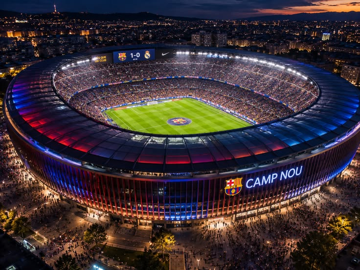
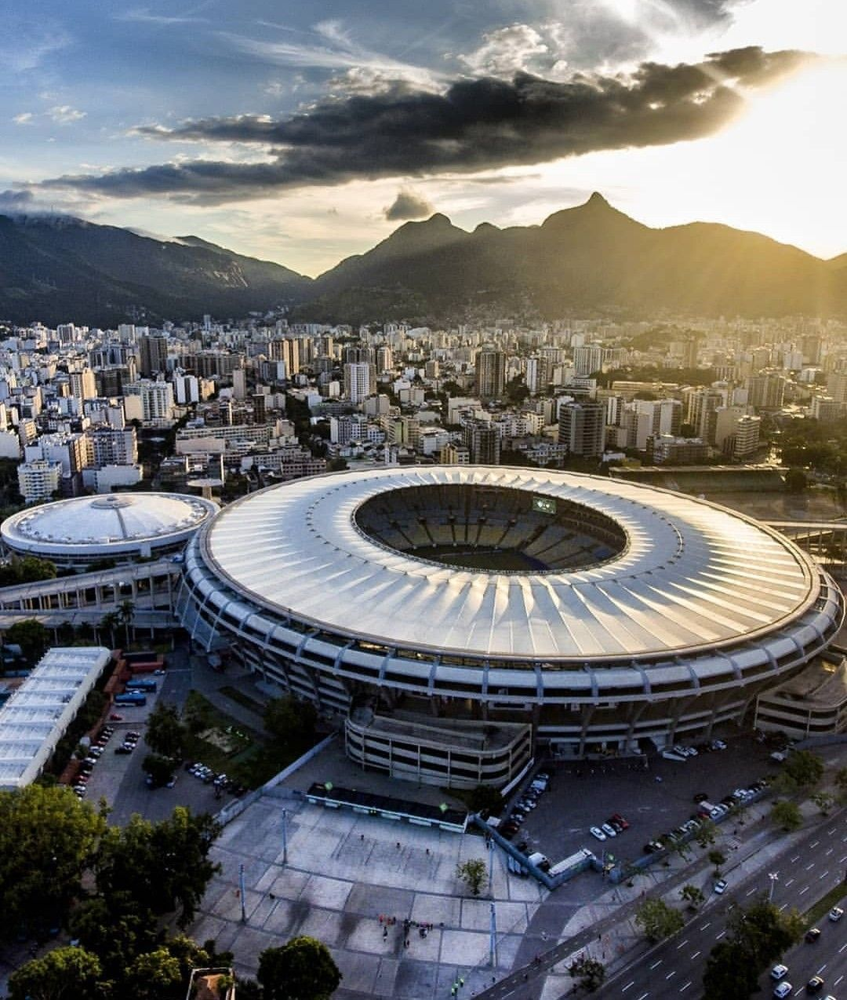
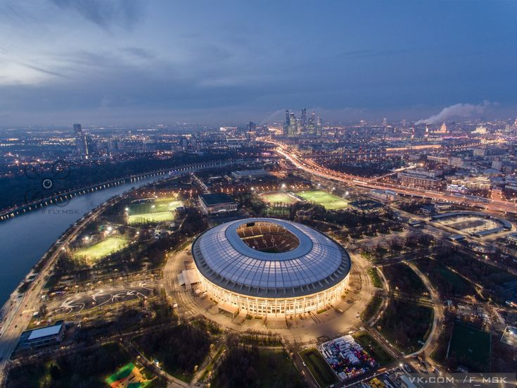
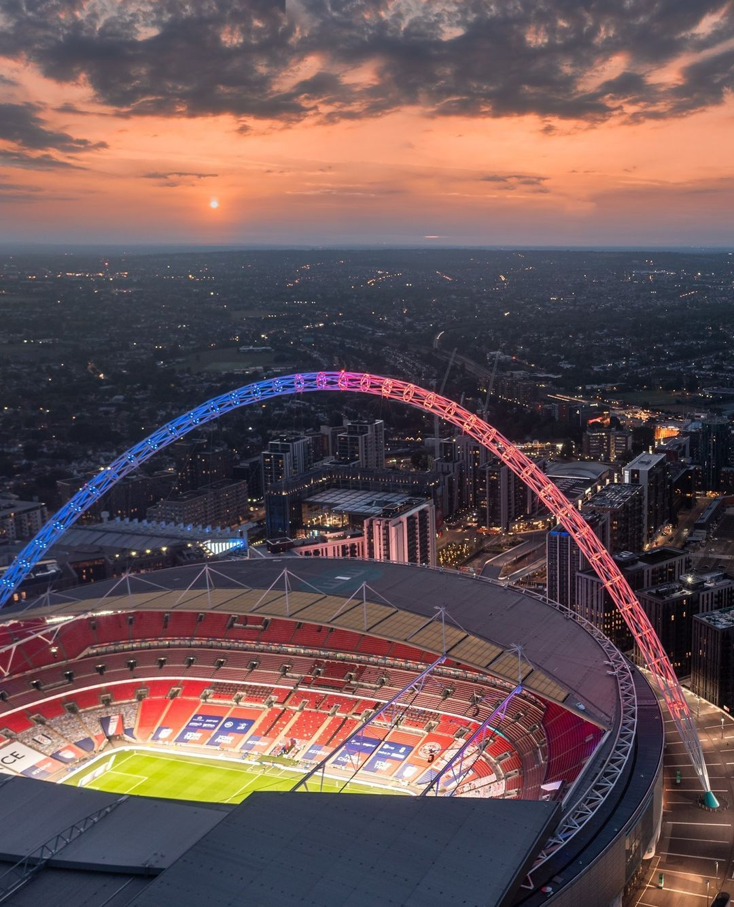
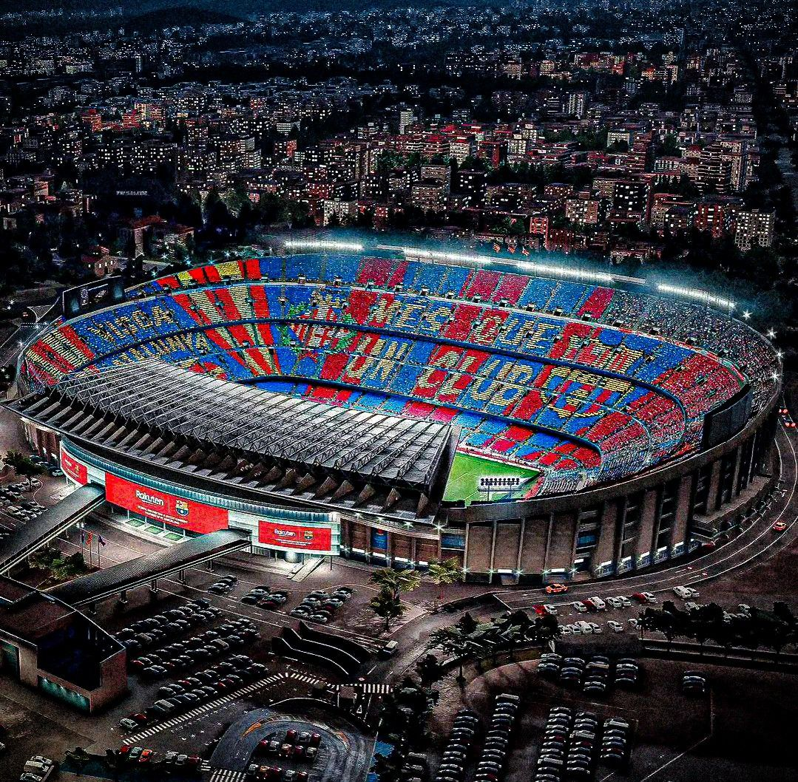

Навигация по сайту:
Главная страница |
Подробнее о Маракане |
Список стадионов (Таблица)
Легендарные спортивные стадионы
Галерея великих арен




Уэмбли (Лондон, Англия)

Один из самых известных стадионов мира, открытый в 2007 году на месте старого «Уэмбли». Второе по вместимости спортивное сооружение в Европе (90 000 зрителей). Стадион увенчан знаменитой аркой высотой 134 метра, которая поддерживает вес крыши и является визуальной доминантой комплекса.
Здесь проводятся финалы Кубка Англии, домашние матчи сборной Англии по футболу, а также крупнейшие музыкальные концерты. Строительство нового стадиона обошлось примерно в 798 миллионов фунтов стерлингов.
Камп Ноу (Барселона, Испания)

Самый большой по вместимости стадион не только в Испании, но и во всей Европе (вмещает 99 354 зрителей). Был открыт в 1957 году. Домашний стадион футбольного клуба «Барселона».
Арена принимала матчи чемпионата Европы и мира по футболу, а также олимпийский футбольный турнир 1992 года. Внутри стадиона функционирует один из самых посещаемых музеев Каталонии — музей ФК «Барселона».
Интересные факты о стадионах
- Стадион «Уэмбли» был построен в 1923 году и стал символом английского футбола.
- «Камп Ноу» является домом для одного из самых успешных футбольных клубов в мире — ФК «Барселона».
- Стадион «Маракана» в Рио-де-Жанейро принимал финалы чемпионатов мира по футболу в 1950 и 2014 годах.
- «Лужники» в Москве были реконструированы к чемпионату мира по футболу 2018 года и могут вместить более 80 000 зрителей.
Выполнила: Рагулина Диана Сергеевна, Группа: Б9124-09.03.04(4)